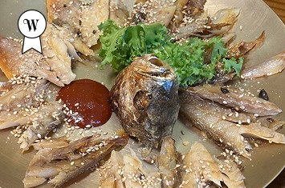
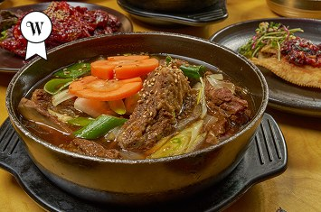
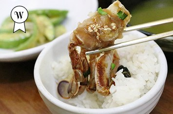
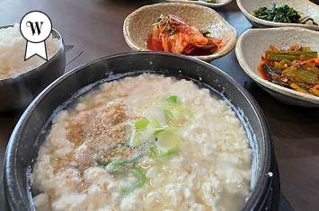
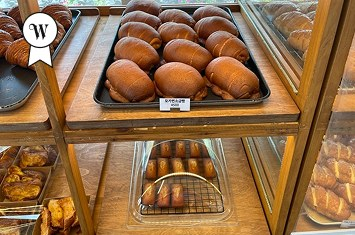
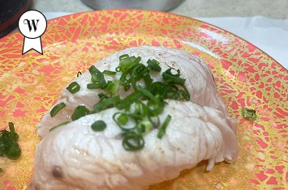

강민주의들밥 본점
돌솥밥과 구수한 청국장, 제철 나물 반찬이 어우러지는 건강한 이천식 밥상.
Vivien's Pick
Top Icheon Eats, Curated by Vivian

돌솥밥과 구수한 청국장, 제철 나물 반찬이 어우러지는 건강한 이천식 밥상.

윤기 나는 이천쌀밥에 게장, 갈비찜, 직화구이 정식을 더한 대표 쌀밥 한정식.

제철 재료로 차린 자연식 한정식. 솥밥과 게장, 보리굴비를 푸짐하게 즐기는 곳.

고소한 순두부와 콩비지를 담백하게 맛볼 수 있는 사음동의 정갈한 두부 맛집.

고즈넉한 한옥 정원과 베이커리가 어우러진 카페. 식사 후 쉬어가기 좋은 공간.

신선한 재료의 스시를 회전초밥으로 즐기는 이천의 캐주얼 초밥 맛집.